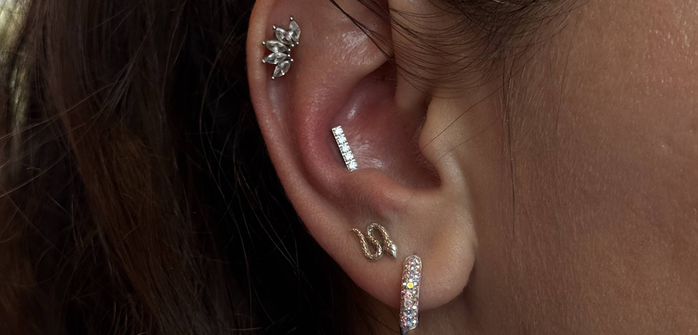
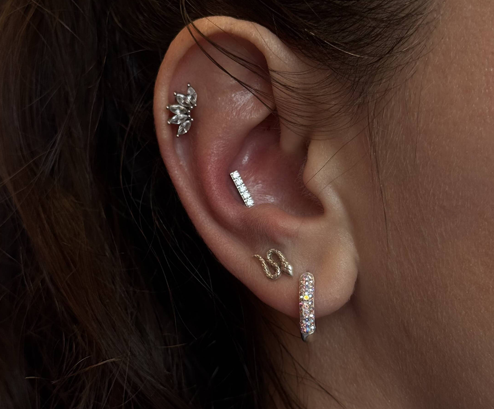
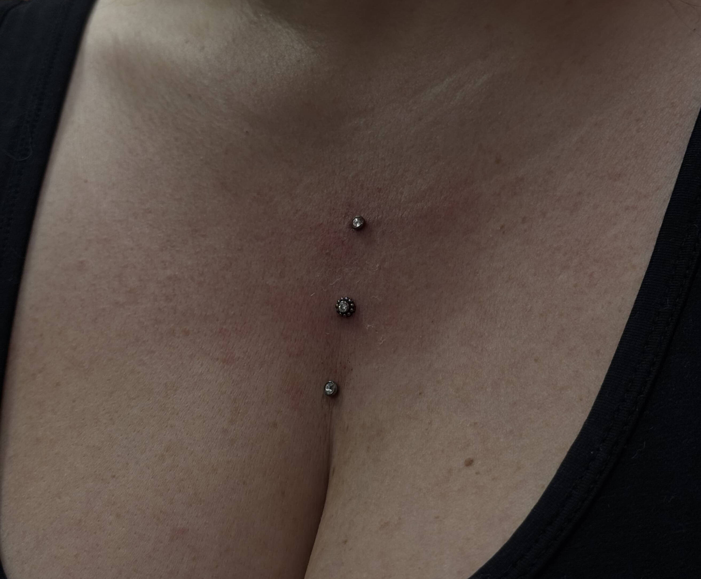
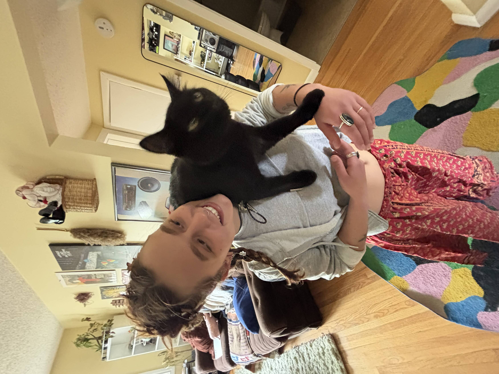

Tattoos
Custom tattoo work is part of the studio mix from day one, with real artist portfolio shots already live on the site.
Steel & Needle brings tattoos, curated piercings, jewelry, tooth gems, and aftercare into one Mission studio. Show the work fast, make the room feel welcoming, and make booking obvious.

The live site shows a broader studio than most people expect: tattoos, jewelry, bookings, and real aftercare information for both piercings and tattoos. That range is useful. It should just scan faster.
Custom tattoo work is part of the studio mix from day one, with real artist portfolio shots already live on the site.
Piercing work sits at the center of the current brand, including curated ears and children’s piercings for ages six months and up.
The live site makes space for jewelry shopping and tooth gem services, which gives the studio a broader walk-in energy than a pure tattoo shop.
Healing guidance, irritation-vs-infection education, and common questions are already published. That trust-building material deserves a better frame.
The live brand already says bright, playful, and judgment-free. This direction keeps that warmth, but gives the work a calmer frame.



The clearest proof in this pass is founder coverage, the live service mix, and the studio’s own visual material.
“Seeing her be able to open up a storefront and welcome walk-ins and have a street sign, it’s so exciting.”
Kat Lee, via CityNews, on opening Steel & Needle in Mission with Ella Pinkowski. That founder energy is the actual story here, not manufactured tattoo-shop attitude.
CityNews reported the studio’s April 2026 opening at 2312 4 Street SW and named both founders.
The original queue note said no website. Discovery found a live Square site at steelneedle.ca and an active Instagram handle, @steelneedleinc.
Piercing aftercare, tattoo aftercare, irritation-vs-infection guidance, and common questions are all live now. The design should amplify that trust, not bury it.
Most shops spend years trying to feel intentional. Steel & Needle gets to define that feeling early: sister-founded, walk-in visible, and already publishing care information instead of hiding behind mystery.
Mission frontage matters.
The CityNews piece made the storefront and street sign part of the emotional payoff. Online, that translates into confidence and easy next steps.
The category mix is the hook.
Tattooing, curated piercings, tooth gems, jewelry, and healing guidance all in one studio is broader than the usual one-note shop page.
The tone should match the room.
The live site literally says bright, playful, and judgment-free. A premium version should still feel approachable, not icy or intimidating.
Phone and public hours were not clearly exposed in this pass, so the page points people to the channels that are already live instead of guessing.
2312 4 Street SW
Mission, Calgary, Alberta
Use the live Square site to book or shop.
steelneedle.ca
Instagram handle confirmed during discovery.
@steelneedleinc